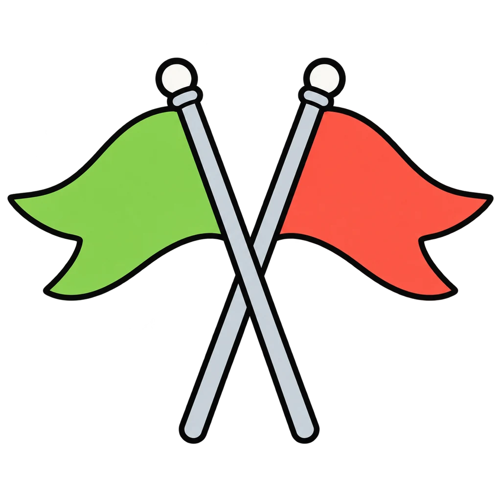
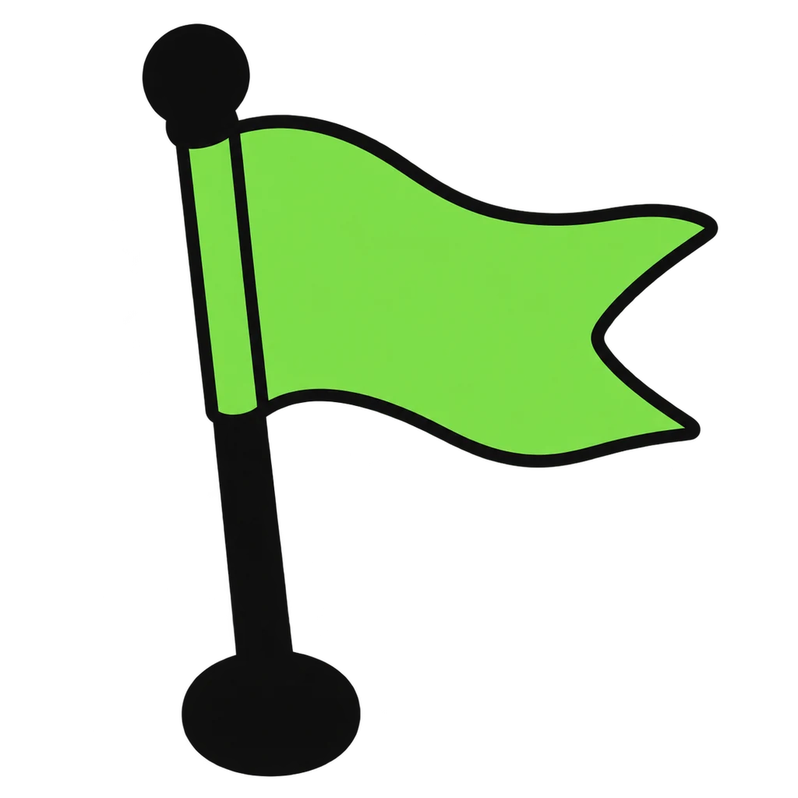
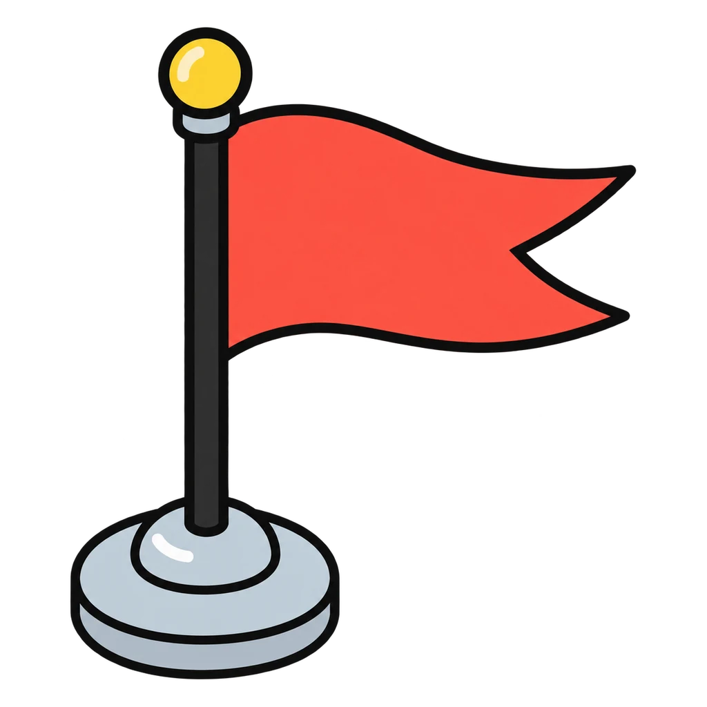

Reviews Lesson 3.12, Lesson 3.6. This game reviews Lesson 3.12, Healthy vs Unhealthy Relationships: the Signs and Lesson 3.6, Peer Influence, Pressure, and Refusal Skills. Every red flag names its sign: control, put-downs, isolation, pressure, or fear. The two "depends" cards from the handout are left out on purpose. Round 2 is the four refusal steps from Lesson 3.6, scrambled, tapped into order. Use it as the do now before Lesson 3.13 or as review before the Unit 3 test. Every card is a role, never a person in the room. Nothing is saved when the page closes.

Green Flag, Red Flag
A friend, a teammate, a cousin, a person in a group chat. Is what they do a green flag or a red flag? Then, the four steps for saying no.
How to play
- Remember the rule from the lesson: one bad day is not a sign; a pattern is. Fear is a tell-an-adult sign the first time, on its own.


Done
The ones to study:
Worth knowing by heart:
- If a card felt close to home: tell a trusted adult in your building. The counselor is one. It is not trouble.